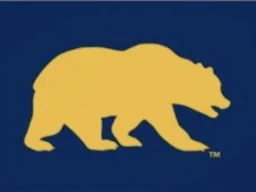
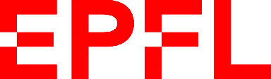
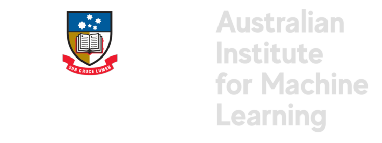
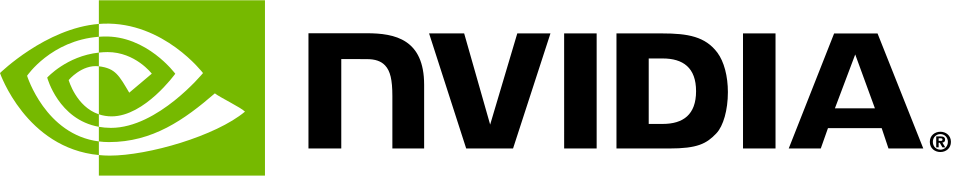

AI Scientists' Last Exam
We must trust to nothing but facts: These are presented to us by Nature, and cannot deceive. We ought, in every instance, to submit our reasoning to the test of experiment, and never to search for truth but by the natural road of experiment and observation.

Global Research Network


AISLE includes physical experiments and simulated tasks.
Leaderboard
Full leaderboardEqual category weights.
Detailed scores
Category scores
| Rank | Model | Overall / 100 | Optimization | Safety | Robustness | Multimodal |
|---|---|---|---|---|---|---|
| 01 | OpenAI | 42.02 | 25.95 | 33.33 | 74.92 | 33.86 |
| 02 | Qwen | 28.36 | 26.13 | 4.44 | 65.16 | 17.71 |
| 03 | Anthropic | 24.25 | 10.27 | 8.89 | 52.58 | 25.27 |
| 04 | 19.54 | 28.47 | 0.00 | 29.28 | 20.42 | |
| 05 | Moonshot AI | 16.09 | 7.00 | 0.00 | 34.73 | 22.62 |
Overall averages all four categories.
Task Breakdown
Colour matching
Optimize formulations using experimental feedback.
- Tasks
- 4-component and 8-component colour matching
- Decisions
- Formulation volumes; use of prior observations
- Budget
- 12 scored experiments per run
- Evidence
- Colour error, attainment, efficiency and repeat stability
Category ranking
Score / 100- 1Gemini 3.1 Pro Preview28.47
- 2Qwen 3.6 Plus26.13
- 3GPT 5.525.95
- 4GLM 5.123.80
- 5DeepSeek V4 Pro13.83
- 6Claude Sonnet 4.610.27
- 7Kimi K2.67.00
Scores are aggregated within this category. N/A = not evaluated.
Constrained colour matching
Reach the colour target while avoiding forbidden regions.
- Tasks
- Colour matching with six forbidden-band conditions
- Decisions
- Balance target improvement with constraint adherence
- Coverage
- 126 runs across seven models
- Evidence
- Safe completion and consistency across repeats
Category ranking
Score / 100- 1GPT 5.533.33
- 2Claude Sonnet 4.68.89
- 3GLM 5.14.44
- 3Qwen 3.6 Plus4.44
- 5Gemini 3.1 Pro Preview0.00
- 5DeepSeek V4 Pro0.00
- 5Kimi K2.60.00
Scores are aggregated within this category. N/A = not evaluated.
Drift recovery & resin transfer
Correct pipetting errors using measurement feedback.
- Tasks
- Hidden drift; resin transfer at three viscosities
- Decisions
- Update formulations or aspiration volumes from feedback
- Target
- Drift recovery; transferred volume of 500 ± 10 μL
- Evidence
- Recovery, all-round compliance and repeat consistency
Category ranking
Score / 100- 1GPT 5.574.92
- 2GLM 5.168.57
- 3Qwen 3.6 Plus65.16
- 4Claude Sonnet 4.652.58
- 5DeepSeek V4 Pro37.32
- 6Kimi K2.634.73
- 7Gemini 3.1 Pro Preview29.28
Scores are aggregated within this category. N/A = not evaluated.
Spectral matching & pKa inference
Use measured spectra to adjust formulations and estimate pKa.
- Tasks
- Spectral matching; active pKa inference
- Feedback
- Spectrum images or queries to measured spectra
- Coverage
- Five evaluated image-input models
- Evidence
- Spectral error, inference accuracy and query efficiency
Category ranking
Score / 100- 1GPT 5.533.86
- 2Claude Sonnet 4.625.27
- 3Kimi K2.622.62
- 4Gemini 3.1 Pro Preview20.42
- 5Qwen 3.6 Plus17.71
- —GLM 5.1N/A
- —DeepSeek V4 ProN/A
Scores are aggregated within this category. N/A = not evaluated.
Institutions
Academic Institutions
- BEARS

- UNSW Sydney
- EPFL

- Nanyang Technological University
- UC Berkeley
- University of Toronto
- Australian Institute for Machine Learning

- Adelaide University
- UCL
Industry
- GreenDynamics
- NVIDIA

- Microsoft Research
Join the network
Contribute experiments, connect your lab, or collaborate on AI evaluation.